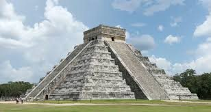
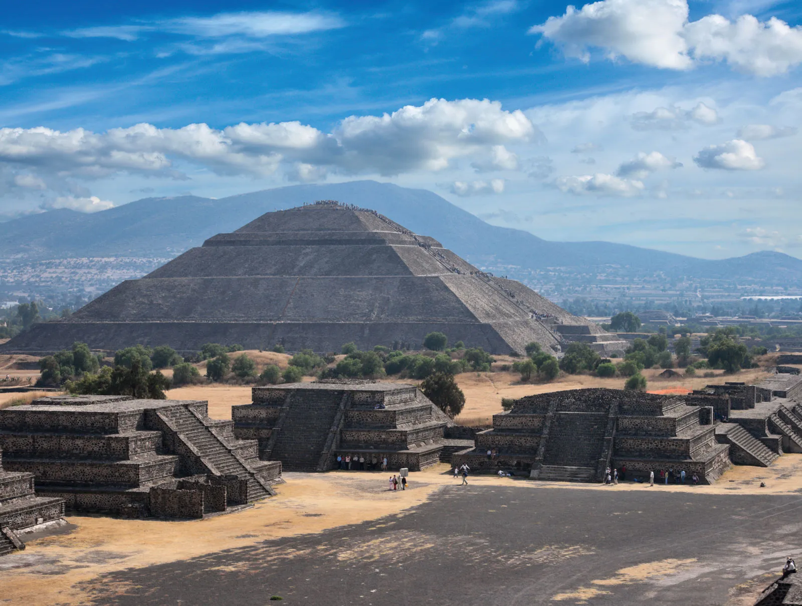
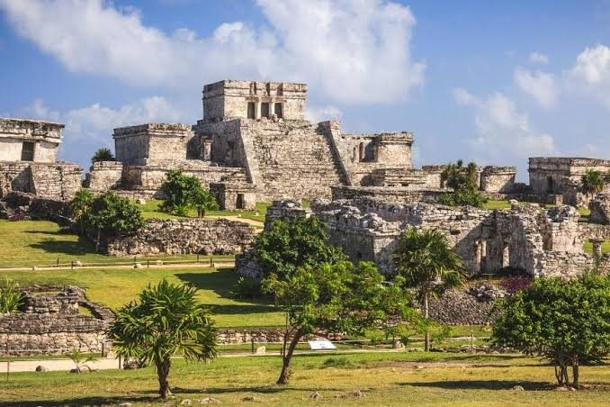

Gifted by France in 1886 to celebrate American independence and the abolition of slavery, this 93-meter copper figure welcomes travelers to New York Harbor. For millions of immigrants arriving at nearby Ellis Island, Lady Liberty’s torch offered a first glimpse of hope.
Independence Hall
Philadelphia
Inside this red-brick Georgian assembly room, the Founding Fathers debated and signed the Declaration of Independence in 1776 and drafted the U.S. Constitution in 1787. The principles of American self-government took shape within these walls.
Lincoln Memorial
Washington, D.C.
Dedicated in 1922, this neoclassical temple houses a 19-foot marble statue of President Abraham Lincoln, honoring the leader who preserved the Union and ended slavery. On its steps in 1963, Dr. Martin Luther King Jr. delivered his “I Have a Dream” speech.
Mexico
3 historic landmarks

Chichén Itzá
Yucatán
A major Maya political and astronomical center between 600 and 1200 AD, Chichén Itzá is anchored by El Castillo. During the equinoxes, sunlight casts a shadow along its staircase resembling a descending feathered serpent, showcasing Maya mathematical brilliance.

Teotihuacán / Pyramids of the Sun and Moon
State of Mexico
Flourishing centuries before the Aztecs, this metropolis housed over 100,000 residents along the Avenue of the Dead. When the Aztecs later discovered its towering pyramids, they named it Teotihuacán—“the place where the gods were created.”

Tulum Archaeological Site
Quintana Roo
Perched on 12-meter limestone cliffs above the Caribbean, this 13th-century walled Maya port controlled coastal trade in turquoise, jade, and obsidian. Its watchtowers guided seafaring Maya canoes through the barrier reef.